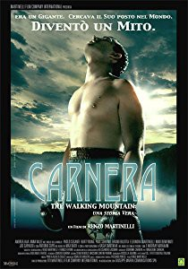

IMDB-Wertung: 5.6 / 10
IMDB-Wertung: 5.6 / 10  Metascore:
Metascore: 
The life of Primo Carnera a.k.a. "Ambling Alp", Italian professional boxer and the World Heavyweight Champion from June 1933 to June 1934, but also accused by some of having ties to the mob.
Alternativ: Carnera: The Walking Mountain
 IMDB-Wertung: 5.6 / 10 Metascore:
The life of Primo Carnera a.k.a. "Ambling Alp", Italian professional boxer and the World Heavyweight Champion from June 1933 to June 1934, but also accused by some of having ties to the mob.
Jahr: 2008
Dauer: 120 Minuten
FSK:
Land: Italien Studio: Epic Pictures GroupTonspuren: DTS - ,
Untertitel:
Auflösung: 1080p (1920x836) Größe: 6225 MB
Genre: Drama, Sport, Biographie
Regisseur: Renzo Martinelli
Drehbuch: Renzo Martinelli
Soundtrack: Aldo De Scalzi, Pivio
Darsteller:
 F. Murray Abraham als Leon See
F. Murray Abraham als Leon See Antonio Cupo als Max Baer
Antonio Cupo als Max Baer Bruno Bilotta als Paul Journée
Bruno Bilotta als Paul JournéeDatei: X:\2008(A-F)\Carnera - Der Grösste Boxer Aller Zeiten! (2008, FSK, 1920x836).mkv seit 16.02.2018
Festplatte: HD 2007(A-Z)-2008(A-F)
 Es gibt insgesamt 66 Filme in der Gruppe '2008(A-F)'
Es gibt insgesamt 66 Filme in der Gruppe '2008(A-F)'